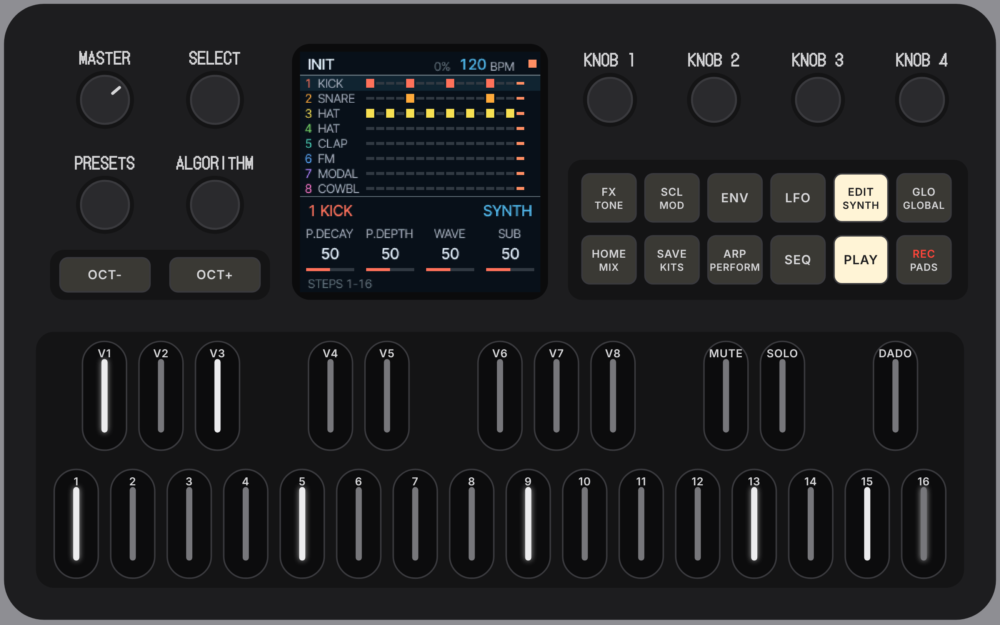
Il manuale segue il pannello: prima i comandi e lo schermo, poi un capitolo per ogni bottone di pagina, nell'ordine in cui li userai costruendo un kit. In fondo, il riferimento rapido di tutte le pagine in due facciate.
Drummatic FM-1 trasforma l'M-VAVE FM-1 in una drum machine a otto voci: ogni voce ha un sintetizzatore con 25 motori, un filtro, una distorsione, due inviluppi, due LFO, una matrice di modulazione e un proprio sequencer euclideo con dieci lane per passo. Le voci passano in un mixer con delay e riverbero in mandata e in un bus master.
Il motore audio è lo stesso di Drummatic 0.2.3, il plugin per Windows e macOS, riscritto per il processore dell'FM-1 e verificato voce per voce contro l'originale. Un kit fatto sull'FM-1 suona come lo stesso kit nel plugin. Mancano solo il sampler (l'FM-1 non ha memoria per i campioni) e le uscite multiple (l'FM-1 ha un'uscita stereo).
| Termine | Significato |
|---|---|
| Kit | Tutto quello che suona: le otto voci, le loro sequenze, le modulazioni, il mixer, gli effetti, il master e la Performance. Se ne salvano 16 nella memoria flash. |
| Voce | Uno degli otto strumenti del kit, numerati da 1 a 8. Ognuna ha suono e sequenza propri. |
| Voce scelta | La voce su cui agiscono le manopole e i tasti dei passi. Si sceglie con i tasti neri 1–8 o con la manopola ALGORITHM; il suo numero e il suo motore sono scritti sullo schermo sopra i controlli. |
| Gruppo | L'insieme di pagine di un bottone: EDIT, FX, ENV, LFO, SCL, SEQ, HOME, ARP, GLO, SAVE. |
| Pagina | Quattro controlli, uno per ogni manopola KNOB 1–4. Il nome della pagina è in alto a destra della striscia inferiore dello schermo. |
| Passo | Una posizione del sequencer. Una sequenza ha fino a 128 passi; i tasti bianchi ne mostrano 16 alla volta. |
| Lane | Un valore per passo che cambia quel colpo: dinamica, intonazione, ripetizioni, probabilità e altri sei. |
Lo stesso firmware gira nel browser, con il pannello disegnato: è il modo più comodo per imparare l'interfaccia lontano dallo strumento. Tutto quello che questo manuale descrive funziona allo stesso modo; le schermate del manuale sono state riprese da lì.
L'FM-1 ha otto manopole, quattordici bottoni e ventisette tasti. Drummatic usa i tasti bianchi per i passi del sequencer, i tasti neri per le voci e per tre funzioni, i bottoni per le pagine.
| Bottone | Pressione | Tenuto |
|---|---|---|
| EDIT | Gruppo EDIT: SYNTH › ENGINE › VOICE. Di nuovo: la pagina dopo. | — |
| FX | Gruppo FX: TONE › TONE 2. | — |
| ENV | Gruppo ENV: ENV 1 › ENV 2 › VELOCITY. | — |
| LFO | Gruppo LFO: LFO 1 › LFO 1+ › LFO 2 › LFO 2+. | — |
| SCL | Gruppo SCL: MOD › MACRO › LOCKS (al rilascio). | + una manopola: MAP, collega la sorgente di SCL › MOD a quel controllo (capitolo 9). |
| SEQ | Gruppo SEQ: EUCLID › TIME › GROOVE › MORE › LANE › TOOLS. | — |
| HOME | Gruppo HOME: MIX › ROUTING (al rilascio). | Mezzo secondo: il menu di sistema (capitolo 15). |
| ARP | Gruppo ARP: le sette pagine della Performance. | — |
| GLO | Gruppo GLO: TEMPO › DELAY ×3 › REVERB ×3 › MASTER ×2. | — |
| SAVE | KITS › VOICES (al rilascio). | + una manopola: mette o toglie il lucchetto a quel controllo. |
| PLAY | Avvia e ferma il sequencer. Con il clock esterno arma la partenza: CLOCK EXT: WAITING FOR START. | — |
| REC | Modo dei tasti: STEPS › PADS › REC › STEPS (capitolo 10). | — |
| OCT− OCT+ | Vedi la legenda sopra. | Insieme per 5 secondi: UBOOT, la modalità per installare un firmware. |
SCL, HOME e SAVE agiscono al rilascio perché servono anche da tasti modificatori: se mentre li tieni giri una manopola, al rilascio la pagina non cambia.
| Tasto | Tocco | Tenuto + tasti V1–V8 |
|---|---|---|
| V1…V8 | Sceglie la voce. | — |
| MUTE | Muta o riattiva la voce scelta. | Muta o riattiva ogni voce toccata. |
| SOLO | Solo sulla voce scelta (si sentono solo le voci in solo). | Solo su ogni voce toccata. |
| DADO | Randomizza secondo la pagina: la voce, la lane, la Performance o tutte le voci (capitolo 15). | Randomizza il suono di ogni voce toccata. |
Una voce mutata continua a suonare in silenzio: smutandola rientra subito a tempo, con inviluppi e LFO al punto giusto.
Cosa fanno dipende dal modo scelto con REC e dalla pagina:
| Situazione | Tocco | Tenuto |
|---|---|---|
| STEPS (normale) | Aggiunge o toglie un trigger sul passo (al rilascio). | + KNOB 1–4: le lane dei passi tenuti (capitolo 10). Si possono tenere più tasti insieme. |
| PADS | 1–8 suonano le voci 1–8; 9–16 suonano la voce scelta su una scala maggiore, da Do a Do. | — |
| REC | Come PADS; mentre suona, i pad 1–8 scrivono un trigger sul passo in corso della loro voce. | — |
| SAVE › KITS | Carica il kit dello slot 1–16. | — |
| SAVE › VOICES | Carica il preset 1–16 nella voce scelta. | — |
Le manopole sono encoder senza fine: non c'è un punto di partenza da allineare. Girate piano cambiano di un passo per scatto; girate in fretta accelerano (due o quattro passi per scatto). Alcuni controlli hanno un passo proprio:
Lo schermo è diviso in tre fasce: in alto lo stato della macchina, al centro le otto sequenze, in basso la voce scelta con la pagina attuale. Le sequenze restano sempre visibili, qualunque pagina tu stia modificando.
Ogni voce ha un colore fisso, usato per il suo numero, per i colpi del generatore e per le barre dei valori. L'arancio indica sempre la cosa attiva in questo momento: il passo in riproduzione, il controllo appena girato, un valore di MAP. Il rosso indica lucchetti e la modalità REC. La palette dei colori si cambia nel menu di sistema (capitolo 15).
Per un paio di secondi la riga in basso conferma quello che è successo. I messaggi sono in inglese, come sullo strumento:
| Messaggio | Significato |
|---|---|
| KIT SAVED · KIT LOADED | Kit scritto o caricato. |
| USED: OCT+ AGAIN TO OVERWRITE | Lo slot contiene già qualcosa: premi OCT+ ancora una volta per sovrascriverlo. |
| EMPTY SLOT | Hai toccato uno slot vuoto: niente da caricare. |
| KIT TOO BIG: CLEAR SOME LANES | Il kit non sta nello spazio di uno slot: svuota qualche lane che non usi (SEQ › TOOLS › CLR LANE). |
| SAVE FAILED · LOAD FAILED | Errore della memoria flash: la copia precedente resta valida. Riprova. |
| VOICE SAVED · VOICE LOADED | Preset di voce scritto o caricato. |
| VOICE COPIED · VOICE PASTED | EDIT › VOICE: copia e incolla del suono. |
| NOTHING COPIED | PASTE senza aver prima copiato una voce. |
| OCT+: RESET THE VOICE | RESET armato: OCT+ conferma, qualsiasi bottone di pagina annulla. |
| VOICE RESET | Il suono della voce è tornato ai valori iniziali. |
| OCT+: NEW KIT (INIT) · (DAEL REFERENCE) | NEW armato: OCT+ carica il kit indicato. |
| LOCKED · UNLOCKED | SAVE tenuto + manopola: lucchetto messo o tolto. |
| OUT OF THE DADO · IN THE DADO | Lo stesso su una pagina PF: il controllo esce o rientra nel DADO della Performance. |
| DADO: VOICE / LANE / PERFORMANCE / ALL VOICES | Cosa ha randomizzato il tasto DADO. |
| LANE CLEARED · TRIGS CLEARED | SEQ › TOOLS: lane riportata ai valori iniziali, trigger manuali tolti. |
| PERFORMANCE COMMITTED · RESET | ARP › PF GLOBAL: Performance scritta nelle voci o azzerata. |
| CLOCK EXT: WAITING FOR START | PLAY con clock esterno: si parte al prossimo START MIDI. |
Ogni tasto e bottone ha un LED. Acceso pieno vuol dire "attivo"; tenue vuol dire "disponibile". Il menu di sistema (LEDS › DARK) spegne i LED tenui per un pannello più scuro.
| LED | Acceso | Tenue |
|---|---|---|
| Neri V1–V8 | La voce scelta; ogni colpo della voce lo fa lampeggiare. | Voce non mutata. |
| Nero MUTE | La voce scelta è mutata. | — |
| Nero SOLO | Almeno una voce è in solo. | — |
| Bianchi (STEPS) | Passi con un colpo; il passo in riproduzione inverte il suo stato e così il cursore corre sui tasti. | Passi dentro la lunghezza della sequenza. |
| Bianchi (SAVE) | Lo slot scelto. | Slot occupati. |
| Bianchi (PADS) | Lampeggiano con i colpi delle voci 1–8. | Tutti. |
| Bottoni di pagina | Il gruppo della pagina attuale. | Gli altri. |
| PLAY · REC | Il sequencer suona · modo PADS (in REC lampeggia). | — |
| OCT− · OCT+ | C'è una pagina di passi prima o dopo quella mostrata. | — |
Il firmware ha 41 pagine, raccolte in dieci gruppi più il menu di sistema. Ogni gruppo ha il suo bottone: premerlo apre la prima pagina del gruppo; premerlo di nuovo passa alla successiva e dopo l'ultima torna alla prima.
EDIT, FX, ENV, LFO, SCL, SEQ e HOME mostrano i controlli della voce scelta: il numero e il motore scritti a sinistra sopra i controlli dicono quale. ARP, GLO e SAVE agiscono su tutto il kit e non dipendono dalla voce scelta, che resta indicata per comodità.
Tieni una mano sui tasti neri e l'altra sulle manopole: scegli la voce, giri, scegli la voce successiva. Le otto righe in alto ti fanno vedere in ogni momento cosa sta suonando.
| Gruppo | Pagine | A cosa servono | Cap. |
|---|---|---|---|
| EDIT | SYNTH · ENGINE · VOICE | Le quattro manopole del motore; motore, intonazione, stereo; copia, incolla, reset, preset. | 5 |
| FX | TONE · TONE 2 | Filtro, risonanza, distorsione e il loro ordine. | 6 |
| ENV | ENV 1 · ENV 2 · VELOCITY | I due inviluppi AHD e la loro risposta alla dinamica. | 7 |
| LFO | LFO 1 · LFO 1+ · LFO 2 · LFO 2+ | Velocità, ampiezza, forma; sync, bipolare, reset. | 8 |
| SCL | MOD · MACRO · LOCKS | Matrice di modulazione, macro e variation, lucchetti. | 9 |
| SEQ | EUCLID · TIME · GROOVE · MORE · LANE · TOOLS | Generatore, velocità e lunghezza, groove, lane, strumenti. | 10 |
| HOME | MIX · ROUTING | Volume, pan, mandate; choke, trigger, Performance. | 11 |
| ARP | PF ENV … PF GLOBAL | 22 controlli che spostano tutte le voci insieme. | 12 |
| GLO | TEMPO · DELAY · REVERB · MASTER | Tempo e clock, Shatter Delay, Headspace Reverb, bus master. | 13 |
| SAVE | KITS · VOICES | 16 kit e 16 preset di voce nella flash. | 14 |
| HOME tenuto | MENU | Palette, LED, livello USB, autosave. | 15 |
Il gruppo EDIT è il punto di partenza di ogni suono: scegli il motore di sintesi, lo intoni e lo modelli con le sue quattro manopole. Le pagine FX, ENV e LFO lavorano poi sul segnale che il motore produce.
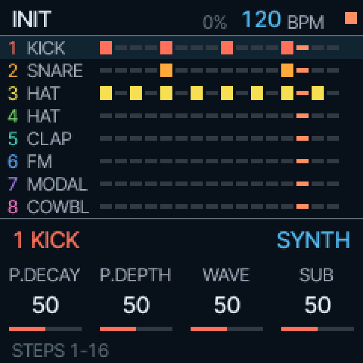
Le quattro manopole del motore scelto. Cambiano nome e funzione con il motore: la tabella dei motori, più avanti, le elenca tutte. Vanno da 0 a 100 e partono da 50.
| KNOB 1–4 | Le manopole 1–4 del motore (per KICK: P.DECAY, P.DEPTH, WAVE, SUB). |
Sono anche destinazioni di modulazione: con SCL tenuto e una manopola le colleghi a un LFO, a un inviluppo o alla dinamica (capitolo 9).
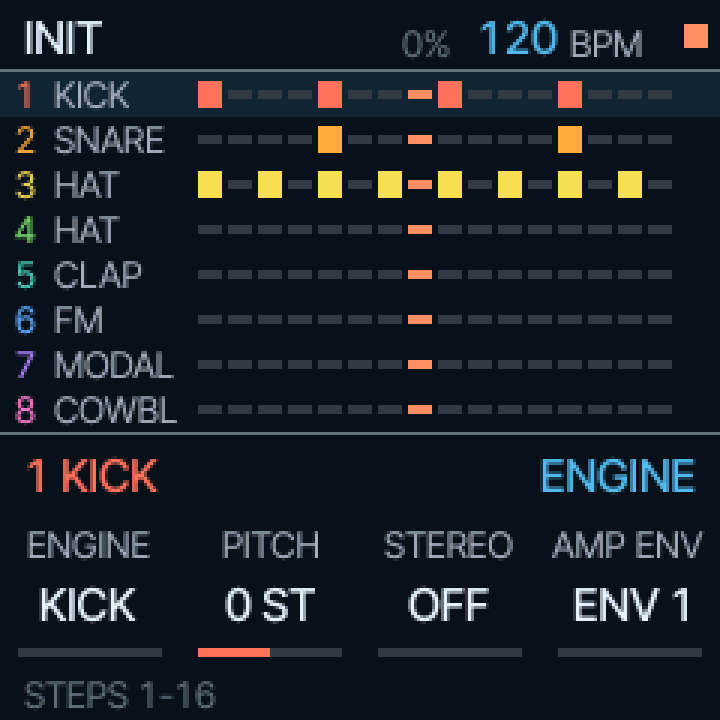
| ENGINE | Il motore di sintesi, uno dei 25. Il suono cambia subito; le quattro manopole di SYNTH restano ai loro valori. KICK … SCRAPYRD |
| PITCH | Trasposizione in semitoni. A 0 i motori da cassa suonano un Do1 (65 Hz), gli altri un Do2 (131 Hz). −48 … +48 ST |
| STEREO | Genera un secondo canale leggermente desintonizzato: suono più largo, ma il motore costa il doppio di CPU. OFF · ON |
| AMP ENV | Quale inviluppo controlla il volume della voce. L'altro resta libero per modulare. ENV 1 · ENV 2 |
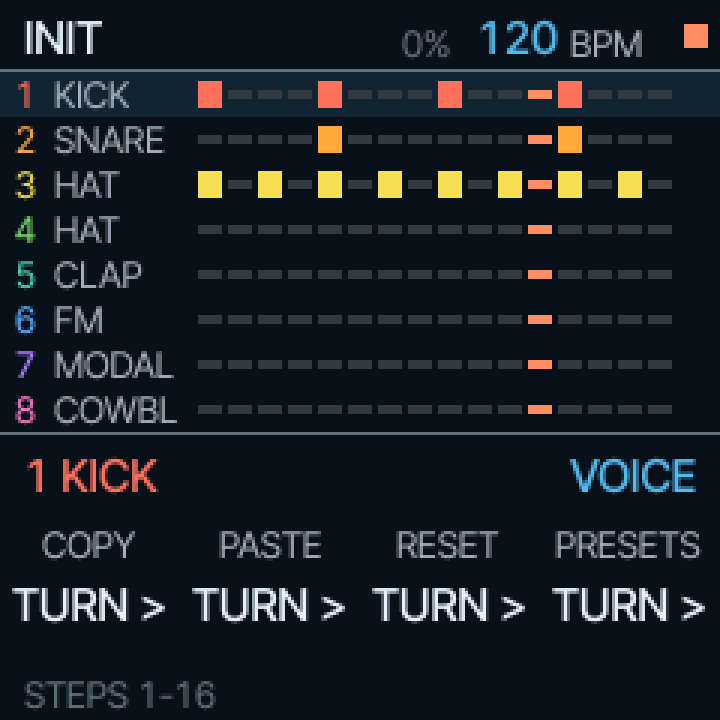
| COPY | Copia il suono della voce scelta in memoria. VOICE COPIED |
| PASTE | Incolla il suono copiato nella voce scelta. Restano com'erano la sequenza, il mixer, il routing e i controlli bloccati. VOICE PASTED |
| RESET | Riporta il suono ai valori iniziali. Chiede conferma: OCT+: RESET THE VOICE, poi OCT+. |
| PRESETS | Apre SAVE › VOICES, i 16 preset di voce (capitolo 14). |
COPY sulla voce 1, scegli la voce 5, PASTE: hai lo stesso suono con un'altra sequenza. Spostane PITCH e PAN e ottieni due tom, o una cassa con il suo eco.
I motori marcati CASSA suonano un'ottava sotto (Do1). Le etichette sono quelle mostrate sullo schermo.
| Motore | KNOB 1 | KNOB 2 | KNOB 3 | KNOB 4 | Carattere |
|---|---|---|---|---|---|
| KICK CASSA | P.DECAY | P.DEPTH | WAVE | SUB | Cassa a seno con discesa di pitch; forma da triangolo a seno saturato. |
| SNARE | P.DECAY | P.DEPTH | CUTOFF | S.RATE | Tono più rumore filtrato a frequenza di campionamento variabile. |
| HAT | BLEND | S.RATE | CUTOFF | HARMONIC | Sei oscillatori quadri in stile 808 miscelati con rumore. |
| CLAP | CLAPS | SPACING | CUTOFF | REV DEC | Da 1 a 8 battiti di rumore filtrato più coda ambientale. |
| FM | RATIO | DEPTH | FEEDBACK | ENV | Due operatori con feedback; ENV aggiunge un attacco brillante. |
| MODAL | HARMONIC | DAMPEN | VARY | BRIGHT | Otto modi risonanti, da membrana a barra metallica. |
| COWBELL | FILTER | CLICK | NOISE | HARMONIC | Due onde quadre in rapporto variabile, click e rumore. |
| ZAP CASSA | ENV | CLICK | OVERTONE | SUB | Discesa di pitch rapidissima, da laser a cassa elettronica. |
| PILLOW CASSA | PILLOW | CLICK | RATTLE | SUB | Cassa morbida e attutita; RATTLE la rende granulosa. |
| TRIPWIRE CASSA | P.DECAY | P.DEPTH | TRANSNT | SQUARE | Doppio inviluppo di pitch e saturazione a onda quadra. |
| RADIATOR CASSA | ENV | TICK | OVERTONE | ROAST | Cassa saturata con tick e sub rumoroso. |
| KOMBUCHA | S.RATE | FEEDBACK | P.ENV | DAMP | Corda pizzicata (Karplus-Strong): plucked, tom, metalli. |
| LPG | FOLD | SHAPE | NOISE | DAMP | Wavefolder in un low-pass gate: bongo, percussioni modulari. |
| BUILDER | OSC WAVE | OSC GAIN | N.TILT | N.GAIN | Oscillatore morfabile più rumore inclinabile. |
| ADDITIVE | F.RATIO | A.RATIO | PARTIALS | AMP ENV | Fino a 24 parziali, da seno puro a campana. Il motore più pesante. |
| CHAOS | RATIO | CHAOS | FILTER | CH.ENV | Due oscillatori che si modulano a vicenda, con filtro mobile. |
| VOSIM | PART 1 | PART 2 | FM | FM ENV | Due seni finestrati: timbri vocali e formantici. |
| SUMSYN | RATIO | BRIGHT | PM | PM ENV | Sintesi per sommatoria; BRIGHT alto aggiunge wavefolding. |
| RESON | HARMONIC | DAMPEN | MATERIAL | RING | Impulso di rumore in un banco di sei risonatori. |
| COMBINAT | C.RATIO | FEEDBACK | P.ENV | FM | Seno in un filtro a pettine modulato. |
| TERRAIN | PITCH 2 | SHAPE 1 | SHAPE 2 | TERRAIN | Wave terrain e operatori bitwise su due oscillatori. |
| SHAME | PITCH 2 | FM | FEEDBACK | SHAME | Sample & hold incrociati, FM e feedback: digitale e instabile. |
| ENTANGLE | PITCH 2 | FM | FEEDBACK | TANGLE | Ring modulation, finestre e terrain su seni. |
| HAYWIRE | OVERTONE | P.DEPTH | BRIGHT | RATTLE | Rullante "acustico" con sezione di cordiera. |
| SCRAPYRD | RATIO | ZAP | MATERIAL | FM | Otto modi metallici con FM e attacco a zap. |
Ogni voce ha un filtro e una distorsione propri, dopo il motore. TONE contiene i controlli che si girano mentre si suona; TONE 2 le scelte che si fanno una volta.
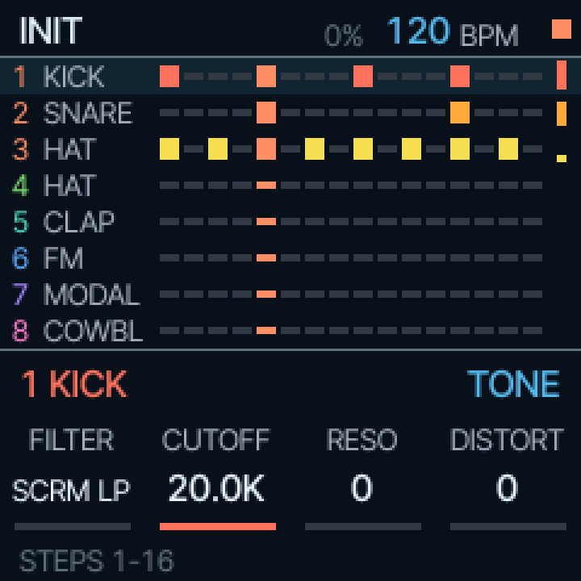
| FILTER | Il tipo di filtro (tabella sotto). 11 tipi |
| CUTOFF | Frequenza di taglio, in hertz. Su un passa-basso, 20.0K è filtro aperto. 20 Hz … 20 kHz |
| RESO | Risonanza: enfasi attorno al taglio; nei filtri a pettine, la quantità di retroazione. 0 … 100 |
| DISTORT | Quantità di distorsione, del tipo scelto in TONE 2. 0 … 100 |
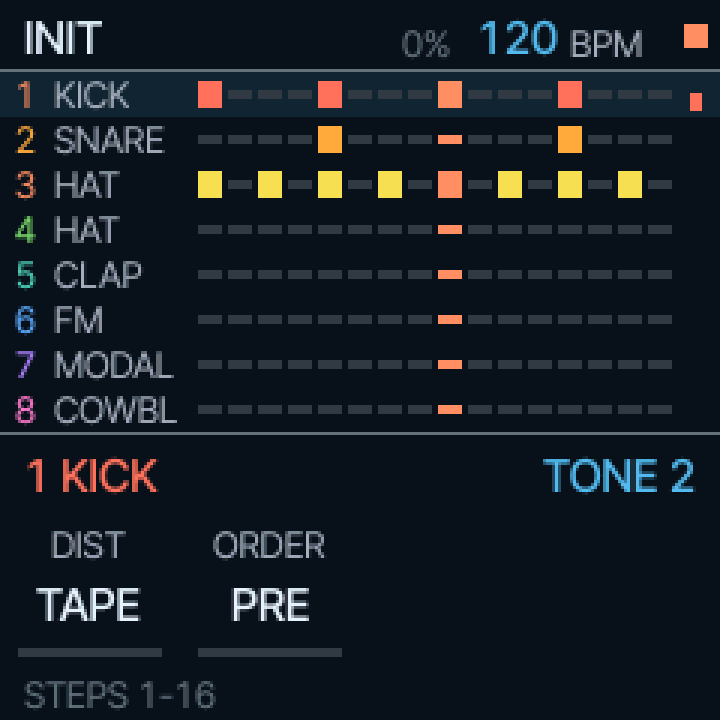
| DIST | Il tipo di distorsione (tabella sotto). 11 tipi |
| ORDER | PRE: distorsione prima del filtro (il filtro addolcisce le armoniche aggiunte). POST: dopo il filtro (la distorsione satura anche la risonanza). PRE · POST |
| Schermo | Carattere |
|---|---|
| SCRM LP · HP · BP | Scream: risonanza aggressiva che satura nel loop. |
| DARK LP · HP · BP | Morbido e scuro, risonanza contenuta. |
| COMB FB+ · FB− | Pettine con retroazione: toni metallici, intonati su CUTOFF. |
| COMB FF+ · FF− | Pettine senza retroazione: phasing statico. |
| COMB AP | Allpass: diffusione e risonanze sottili. |
LP passa-basso · HP passa-alto · BP passa-banda.
| Schermo | Carattere |
|---|---|
| TAPE · TUBE | Saturazione calda, simmetrica o asimmetrica. |
| BITCRUSH · RATECRSH | Riduzione di bit e di frequenza di campionamento. |
| WAVEFOLD · SQUARE | Ripiegamento dell'onda; squadratura. |
| PHASE · CONTRAST | Distorsione di fase; CONTRAST esalta i transienti. |
| DROPOUT | Elimina cicli d'onda interi. |
| MINIGLCH · MEGAGLCH | Micro-delay instabile, mono o stereo (buffer di ~160 ms). |
Un passo con VEL a 127 aggiunge una spinta di distorsione a quel colpo: gli accenti suonano più sporchi anche con DISTORT basso.
MINIGLCH, MEGAGLCH e i filtri COMB sono le parti di TONE più costose. Su un kit pesante, preferiscili su poche voci.
Ogni voce ha due inviluppi AHD: salgono in ATTACK, restano al massimo per HOLD e scendono in DECAY. Uno dei due controlla il volume (EDIT › ENGINE › AMP ENV), l'altro è libero di modulare qualsiasi controllo.
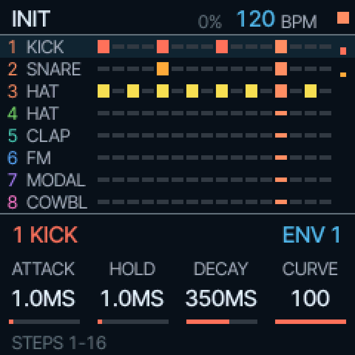
| ATTACK | Tempo di salita. Pochi millisecondi danno un colpo secco; di più ammorbidiscono l'attacco. 0,5 ms … 5 s |
| HOLD | Tempo al massimo prima di scendere: dà corpo ai suoni brevi. ENV 1 fino a 5 s · ENV 2 fino a 20 s |
| DECAY | Tempo di discesa: la lunghezza percepita del suono. ENV 1 fino a 10 s · ENV 2 fino a 20 s |
| CURVE | Forma della discesa, da lineare (0) a esponenziale (100). 0 … 100 |
Se la voce viene ricolpita mentre suona, l'inviluppo riparte dal livello in cui si trova: niente click.
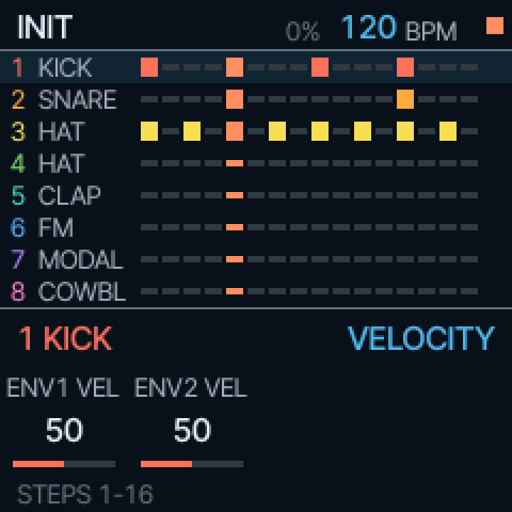
| ENV1 VEL | Quanto la dinamica del colpo (lane VEL, pad, note MIDI) riduce il picco di ENV 1. A 0 tutti i colpi sono uguali; a 100 un colpo debole è molto più basso. 0 … 100 |
| ENV2 VEL | Lo stesso per ENV 2. 0 … 100 |
Lascia AMP ENV su ENV 1, metti ENV 2 con DECAY breve e collegalo a CUTOFF o a PITCH con SCL tenuto: ogni colpo avrà il suo "pluck" di filtro o di intonazione, indipendente dalla durata del suono.
La lane ENV del sequencer accorcia o allunga entrambi gli inviluppi passo per passo, fino a quattro volte o a un quarto (capitolo 10).
Ogni voce ha due LFO. Da soli non fanno nulla: diventano udibili quando li colleghi a un controllo con la modulazione (capitolo 9). Ogni LFO occupa due pagine: la prima con il suono, la seconda (con il +) con il comportamento.
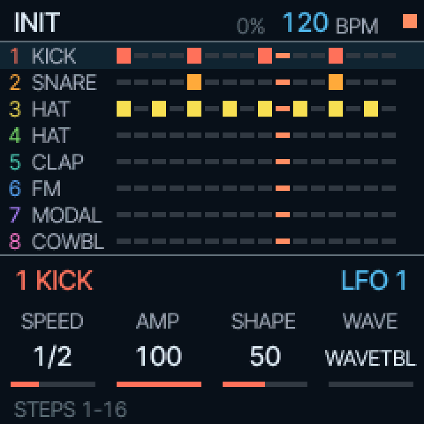
| SPEED | Velocità. In SYNC una divisione musicale; in FREE in hertz, fino a 440 Hz. 8 BAR … 1/64 · 0,01 … 440 Hz |
| AMP | Ampiezza dell'oscillazione: scala tutte le modulazioni che partono da questo LFO. 0 … 100 |
| SHAPE | Modella la forma d'onda scelta in WAVE (tabella). 0 … 100 |
| WAVE | La famiglia di forme d'onda. WAVETBL · TRI TILT · PULSE · SMTH RND |
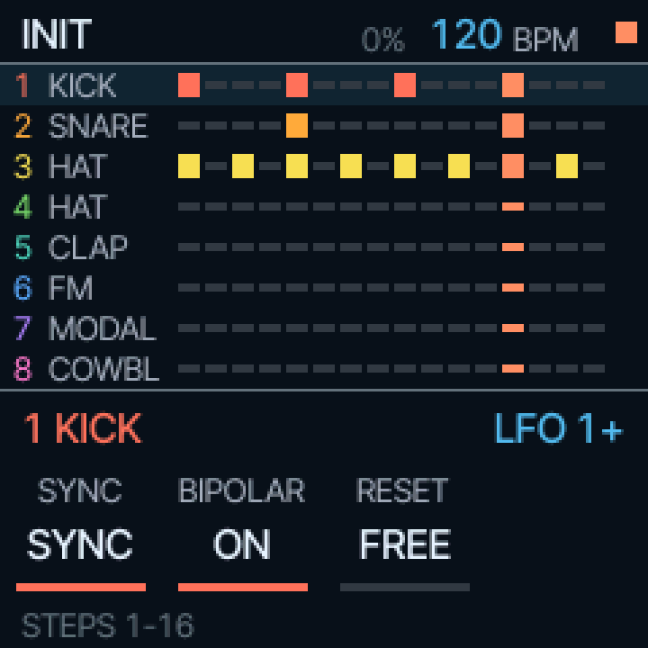
| SYNC | SYNC: la velocità segue il tempo del kit. FREE: velocità libera in Hz. FREE · SYNC |
| BIPOLAR | ON: oscilla sopra e sotto il valore del controllo. OFF: lo sposta solo in una direzione. OFF · ON |
| RESET | Cosa succede a ogni colpo della voce (tabella sotto). 5 modi |
| WAVE | SHAPE da 0 a 100 |
|---|---|
| WAVETBL | Seno › triangolo › dente di sega › quadra › casuale. |
| TRI TILT | Inclina il triangolo da rampa discendente a rampa ascendente. |
| PULSE | Larghezza dell'impulso. |
| SMTH RND | Quanto è morbido il passaggio tra un valore casuale e il successivo. |
| Modo | A ogni colpo |
|---|---|
| FREE | Niente: gira libero, riparte solo con PLAY. |
| ALWAYS | Riparte da zero. |
| SOFT | Riparte solo se la voce era in silenzio. |
| S&H | Legge un valore e lo tiene fino al colpo dopo. |
| 1 SHOT | Fa un solo ciclo, poi si ferma. |
In SYNC, SPEED sceglie fra: 8 BAR, 4 BAR, 2 BAR, 1 BAR, 1/2, 1/4, 1/8, 1/16, 1/32, 1/4T, 1/8T, 1/16T, 1/64 (T = terzina). Gli LFO in sync restano agganciati al tempo anche su sequenze lunghe.
Con RESET su ALWAYS e WAVE su TRI TILT a SHAPE 0, l'LFO diventa una rampa che riparte a ogni colpo: un secondo inviluppo, ma ciclico.
La modulazione collega una sorgente a un controllo: a ogni colpo, o continuamente, la sorgente sposta il controllo intorno al valore che hai impostato. Ogni voce ha otto sorgenti e 22 destinazioni, con una profondità per ogni coppia.
| RANDOM | Un valore nuovo a ogni colpo. |
| VELOCITY | La dinamica del colpo. |
| MACRO 1 · 2 | Due manopole libere (SCL › MACRO); MACRO 2 anche per passo. |
| ENV 1 · 2 | I due inviluppi. |
| LFO 1 · 2 | I due LFO. |
PITCH e le quattro manopole del motore · CUTOFF, RES, DISTORT · ATTACK, HOLD, DECAY di ENV 1 e ENV 2 · SPEED e AMP di LFO 1 e LFO 2 · PAN, GAIN, DELAY e REVERB (le mandate).
Sullo schermo: E1/E2 per gli inviluppi, L1/L2 per gli LFO; le manopole del motore con il loro nome.
È il modo veloce, e quello che userai di più:
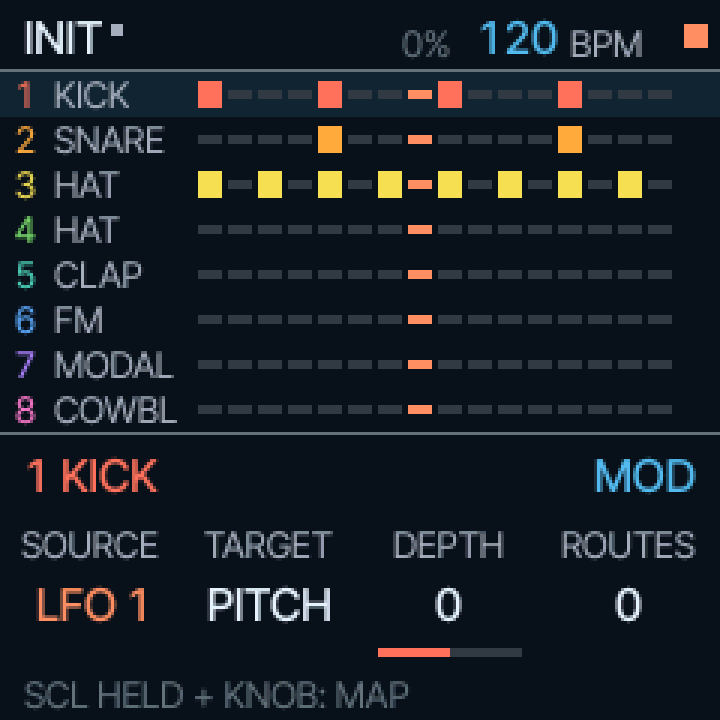
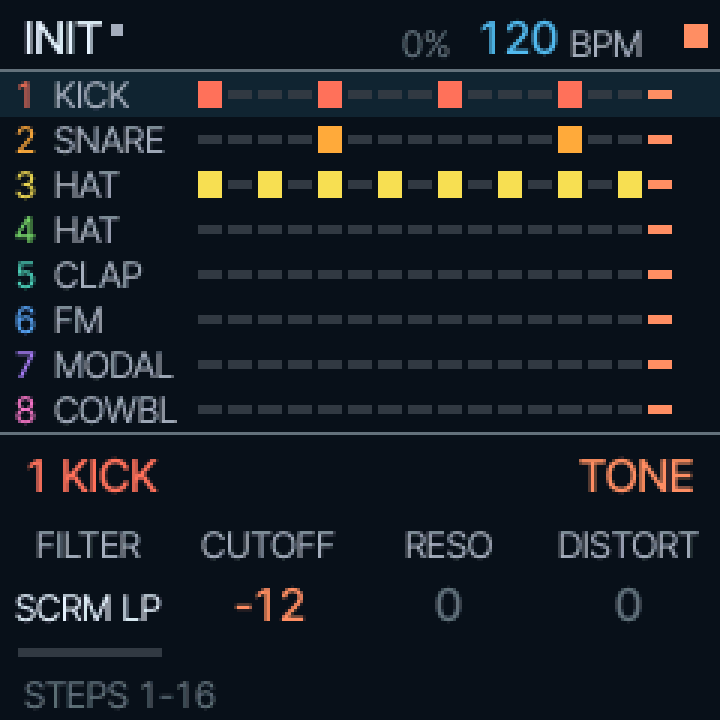
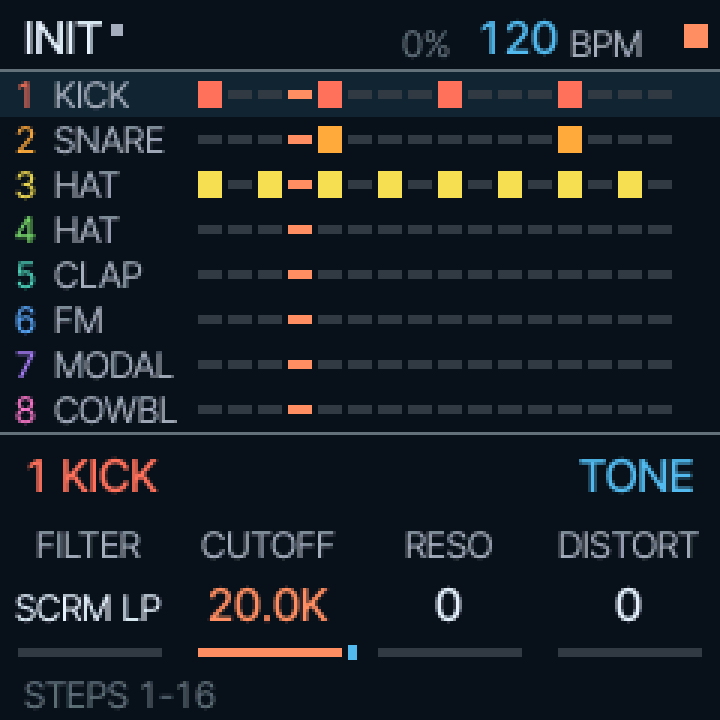
Per togliere una modulazione: tieni SCL e riporta quella profondità a 0. Funziona su tutte le pagine della voce (EDIT, FX, ENV, LFO, HOME) dove il controllo è una destinazione.
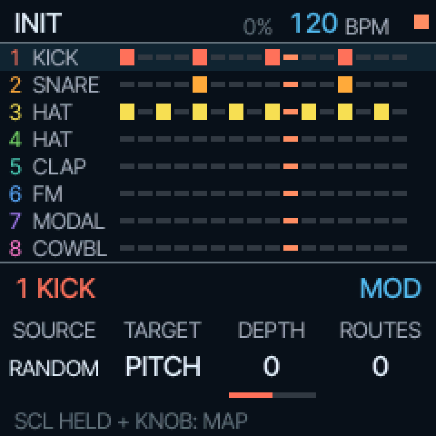
| SOURCE | La sorgente su cui lavorano questa pagina e il gesto MAP. 8 sorgenti |
| TARGET | La destinazione da regolare da qui. 22 destinazioni |
| DEPTH | La profondità della coppia SOURCE › TARGET. −100 … +100 |
| ROUTES | Quanti collegamenti attivi ha la voce, fra tutte le sorgenti (solo lettura). |
La riga in basso elenca le destinazioni già collegate alla sorgente scelta, così vedi a colpo d'occhio cosa fa.
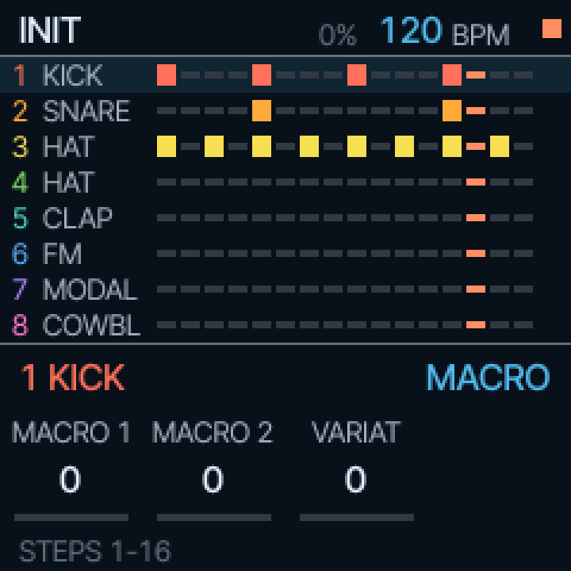
| MACRO 1 | Valore della sorgente MACRO 1. Collegala a più controlli e una sola manopola li muove tutti insieme. 0 … 100 |
| MACRO 2 | Valore della sorgente MACRO 2. La lane MACRO 2 del sequencer lo sostituisce passo per passo. 0 … 100 |
| VARIAT | VARIATION: piccoli scostamenti casuali a ogni colpo su tutti i controlli non bloccati. Più alto, più ogni colpo è diverso. 0 … 100 |
Un controllo bloccato non viene cambiato da VARIATION, dal DADO, dalla Performance e dal caricamento di un preset di voce o da PASTE. Tieni SAVE e gira la manopola del controllo: LOCKED, e l'etichetta diventa rossa. Ripeti per sbloccarlo: UNLOCKED.
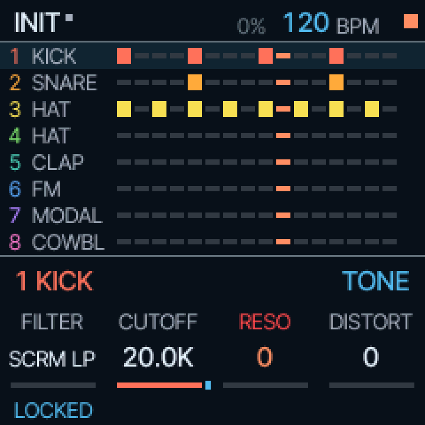
| TARGET | Una delle 22 destinazioni. 22 destinazioni |
| LOCK | A destra blocca, a sinistra sblocca. FREE · LOCKED |
Utile per i controlli che non hanno una manopola sotto mano in quel momento, o per controllare cosa è bloccato scorrendo TARGET.
Sulle pagine ARP il gesto SAVE + manopola esclude invece quel controllo dal DADO della Performance (OUT OF THE DADO).
Ogni voce ha un sequencer proprio, con la sua lunghezza e la sua velocità. I colpi vengono da due fonti che si sommano: il generatore euclideo, che distribuisce un certo numero di colpi nel modo più regolare possibile, e i trigger manuali che metti con i tasti bianchi.
Ogni passo ha dieci valori, le lane, che cambiano il colpo di quel passo. Tieni uno o più tasti bianchi: lo schermo mostra il gruppo di lane e i valori del primo passo tenuto, e le manopole cambiano quel valore su tutti i passi tenuti. PRESETS, mentre tieni i tasti, passa al gruppo successivo. Rilasciando, il tocco non cambia il trigger del passo.
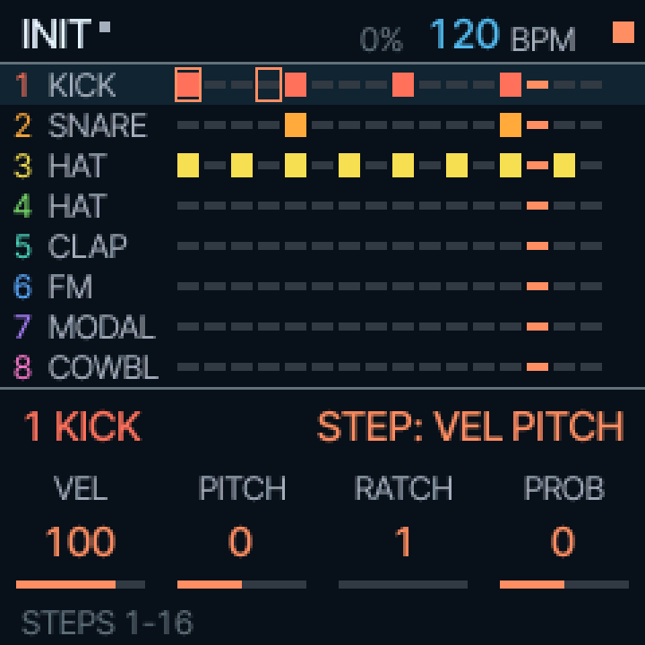
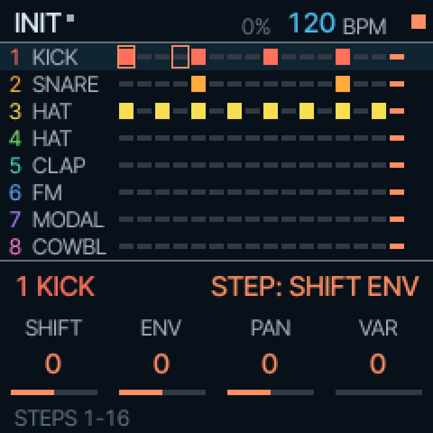
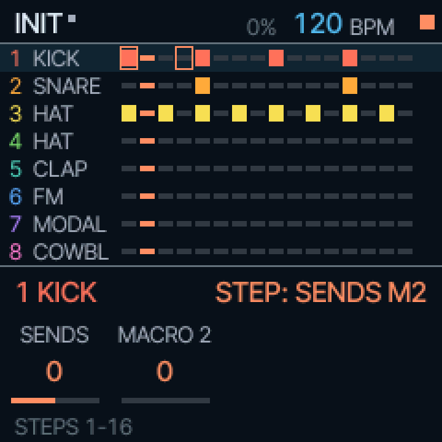
| Lane | Gruppo · manopola | Intervallo | Effetto sul colpo |
|---|---|---|---|
| VEL | 1 · KNOB 1 | 0 … 127 | Dinamica. A 127 aggiunge una spinta di distorsione. |
| PITCH | 1 · KNOB 2 | ±24 semitoni | Trasposizione del passo: linee melodiche, tom intonati. |
| RATCH | 1 · KNOB 3 | 1 … 8 | Ripetizioni del colpo dentro il passo: rullate. |
| PROB | 1 · KNOB 4 | ±100 | Negativo: probabilità di saltare il colpo. Positivo: probabilità di raddoppiare il ratchet. |
| SHIFT | 2 · KNOB 1 | ±100 | Anticipa o ritarda il passo fino a mezzo passo. |
| ENV | 2 · KNOB 2 | ±100 | Accorcia o allunga gli inviluppi (da ¼ a 4 volte). |
| PAN | 2 · KNOB 3 | ±100 | Spostamento stereo del colpo. |
| VAR | 2 · KNOB 4 | 0 … 100 | Variation aggiuntiva per quel colpo. |
| SENDS | 3 · KNOB 1 | ±100 | Positivo: mandata extra al delay. Negativo: al riverbero. |
| MACRO 2 | 3 · KNOB 2 | 0 … 100 | Sostituisce MACRO 2 per quel colpo: un controllo diverso a ogni passo. |
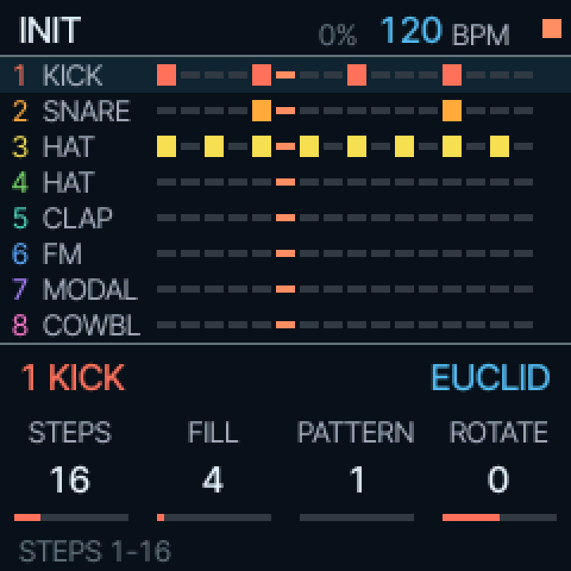
| STEPS | Lunghezza del pattern euclideo. 1 … 64 |
| FILL | Colpi distribuiti sui passi; non supera STEPS. 0 … STEPS |
| PATTERN | Permutazioni: sposta i colpi singolarmente per ritmi meno regolari. 1 è l'euclideo puro. 1 … 64 |
| ROTATE | Ruota il pattern in avanti o indietro. −32 … +32 |
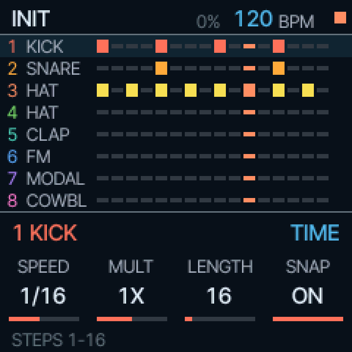
| SPEED | Durata di un passo. 1/1 1/2 1/4 1/8 1/16 1/32 1/4T 1/8T 1/16T 1/32T |
| MULT | Moltiplica la velocità del passo. /4 /3 /2 1X 2X 3X 4X |
| LENGTH | Lunghezza della sequenza, oltre la quale riparte. 1 … 128 |
| SNAP | ON: LENGTH si arrotonda a un multiplo di STEPS. OFF: lunghezze libere, per i poliritmi (7 contro 16). OFF · ON |
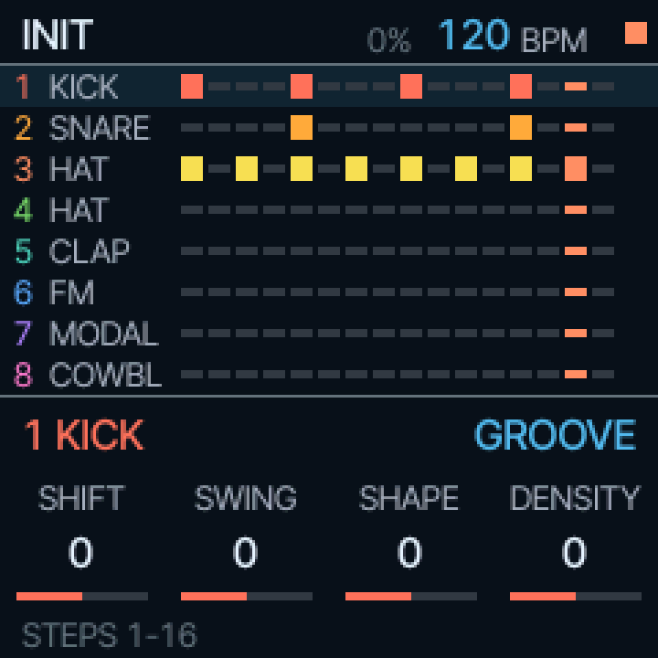
| SHIFT | Anticipa o ritarda l'intera sequenza fino a mezzo passo. ±100 |
| SWING | Sposta i passi dispari; negativo li anticipa. ±100 |
| SHAPE | Curva il tempo dentro il pattern: i colpi accelerano o rallentano. ±100 |
| DENSITY | Negativo toglie colpi a caso; positivo ne aggiunge sulle pause. ±100 |
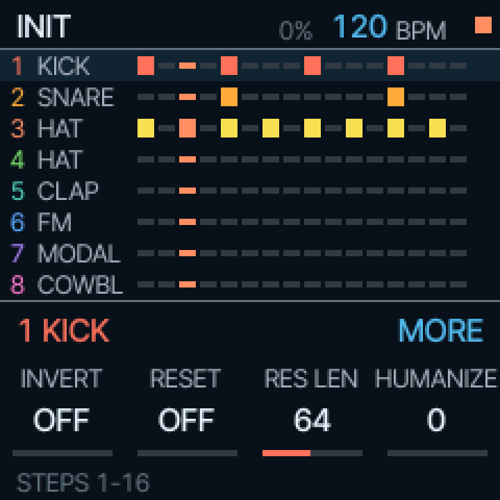
| INVERT | Scambia colpi e pause del generatore. OFF · ON |
| RESET | Fa ripartire la sequenza ogni RES LEN passi. OFF · ON |
| RES LEN | Ogni quanti passi ripartire. 1 … 128 |
| HUMANIZE | Globale: piccoli spostamenti casuali, uguali per le voci che suonano sullo stesso passo, così il groove resta unito. È lo stesso controllo di GLO › TEMPO. 0 … 100 |
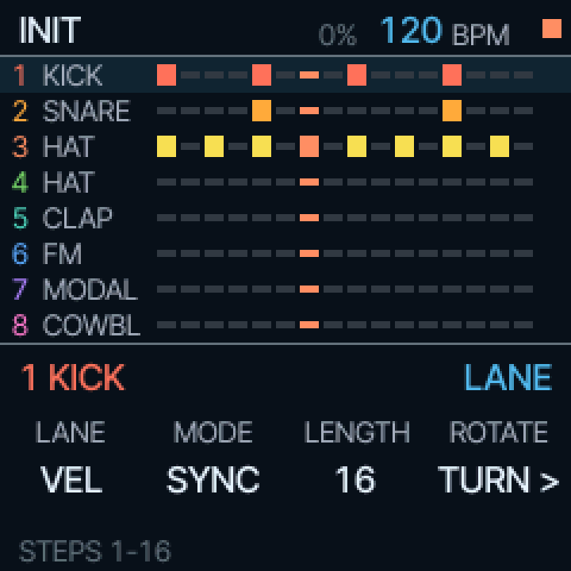
| LANE | Quale delle dieci lane regolare. È anche la lane che il DADO randomizza sulle pagine SEQ. VEL … MACRO 2 |
| MODE | Come avanza la lane (tabella sotto). SYNC · FREE · TRIG · RETRIG |
| LENGTH | Lunghezza propria della lane, per i modi diversi da SYNC. 1 … 128 |
| ROTATE | Ruota i valori della lane di un passo per scatto, nei due sensi. |
| MODE | Avanzamento della lane |
|---|---|
| SYNC | Segue la sequenza principale passo per passo. |
| FREE | Avanza a ogni passo ma con la sua LENGTH: poliritmi di parametri (una lane PITCH di 5 su un ritmo di 16). |
| TRIG | Avanza solo quando la voce suona davvero: ogni colpo prende il valore successivo. |
| RETRIG | Come TRIG, ma riparte dall'inizio a ogni giro della sequenza. |
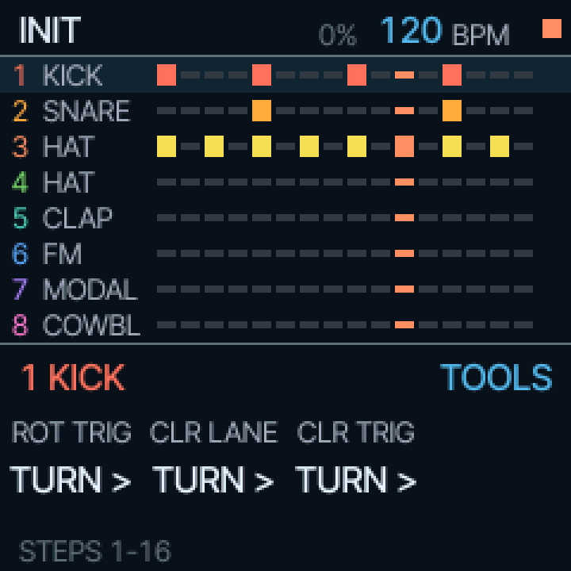
| ROT TRIG | Ruota i trigger manuali di un passo per scatto, nei due sensi. |
| CLR LANE | Riporta ai valori iniziali la lane scelta in LANE (a destra). LANE CLEARED |
| CLR TRIG | Toglie tutti i trigger manuali della voce (a destra). TRIGS CLEARED |
REC cambia il modo dei tasti bianchi, in giro: STEPS › PADS › REC › STEPS. La riga in basso dello schermo ricorda il modo.
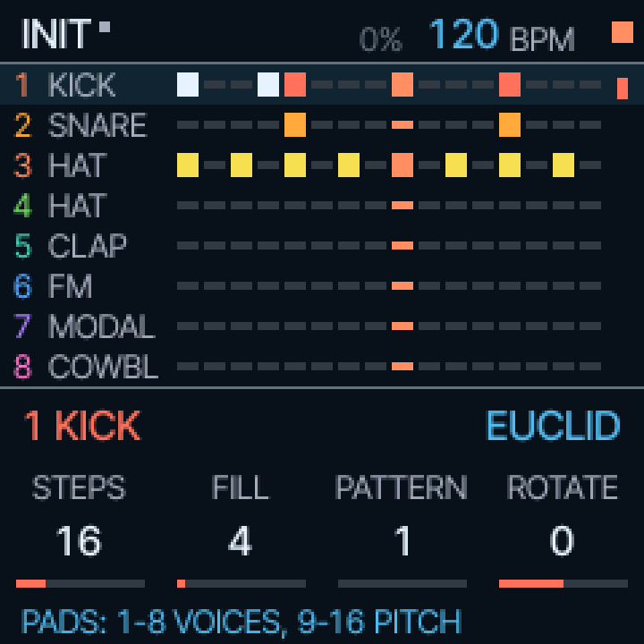
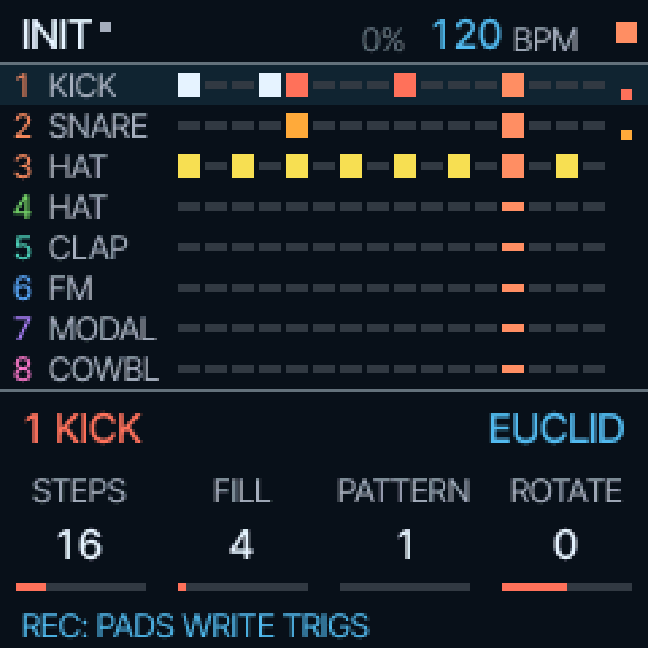
PADS. I bianchi 1–8 suonano le voci 1–8 a dinamica 100. I bianchi 9–16 suonano la voce scelta sulla scala maggiore Do Re Mi Fa Sol La Si Do; OCT− e OCT+ cambiano l'ottava (da un'ottava sotto a due sopra).
REC. Come PADS; in più, mentre il sequencer suona, ogni pad 1–8 scrive un trigger manuale sul passo in corso della sua voce.
HOME è la striscia di canale della voce scelta: quanto suona, dove sta nello stereo e quanto manda agli effetti. ROUTING collega le voci fra loro e decide quali seguono la Performance.
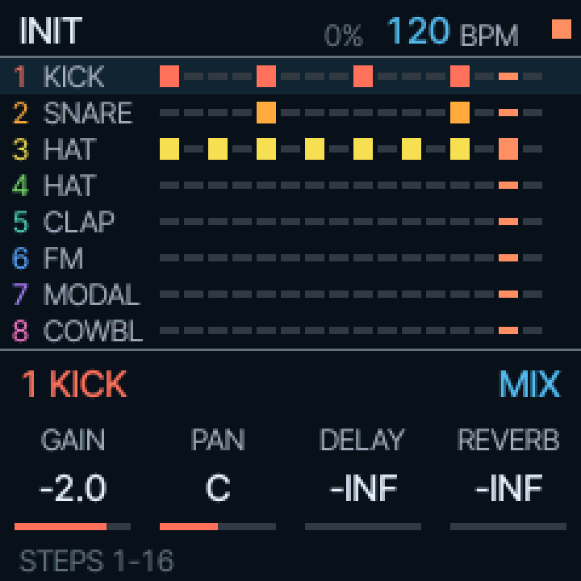
| GAIN | Volume della voce, in dB. −60 … +12 dB |
| PAN | Posizione stereo; C è il centro. L … C … R |
| DELAY | Mandata allo Shatter Delay. −INF è nessuna mandata. −INF … 0 dB |
| REVERB | Mandata all'Headspace Reverb. −INF … 0 dB |
Tutti e quattro sono destinazioni di modulazione: un LFO lento su PAN, RANDOM su DELAY per echi solo ogni tanto.
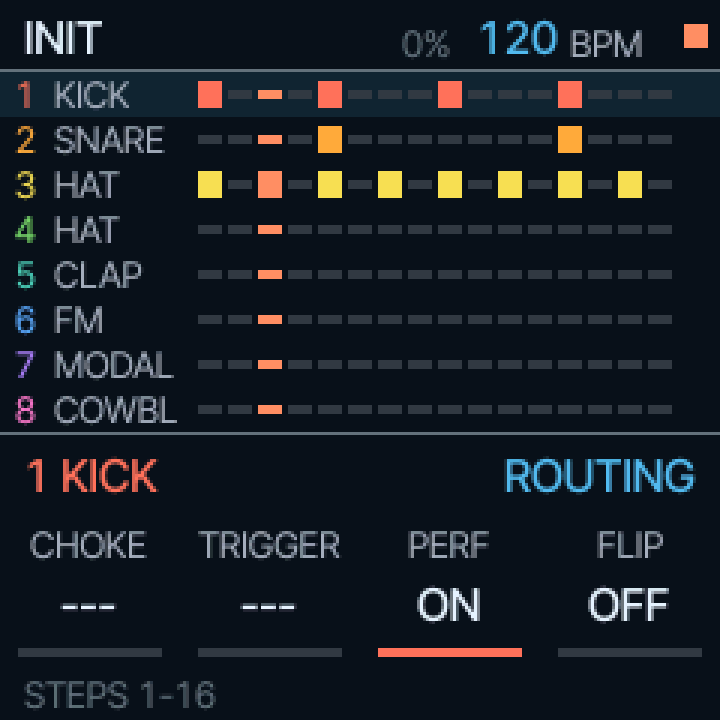
| CHOKE | Quando questa voce suona, zittisce la voce indicata: hi-hat chiuso che taglia l'aperto. --- · 1 … 8 |
| TRIGGER | Quando questa voce suona, fa suonare anche la voce indicata: due voci stratificate con una sola sequenza. Le catene non possono chiudersi in cerchio. --- · 1 … 8 |
| PERF | La voce segue la Performance (ARP). OFF · ON |
| FLIP | La Performance agisce su questa voce al contrario: se le altre si allungano, questa si accorcia. OFF · ON |
Mute e solo non hanno una pagina: sono i tasti neri MUTE e SOLO. Un tocco agisce sulla voce scelta; tenendoli e toccando i tasti V1…V8 agisci su più voci senza cambiare la voce scelta. Sullo schermo una voce mutata è grigia, una voce in solo ha il nome del motore evidenziato. Mute e solo si possono comandare anche via MIDI, anche in modo momentaneo (capitolo 16).
Tieni SOLO, tocca V3, lascia: senti solo la voce 3. Ripeti per tornare al mix.
La Performance è un livello sopra le voci: ogni suo controllo si somma al controllo corrispondente di tutte le voci con PERF attivo. A 0 non cambia nulla; girando a destra o a sinistra sposti tutte le voci nella stessa direzione, per esempio allunghi tutti i decadimenti o apri tutti i filtri.
I controlli PF vanno da −100 a +100 e sono 22, su sei pagine; la settima pagina ha i comandi.
| Pagina | KNOB 1 | KNOB 2 | KNOB 3 | KNOB 4 |
|---|---|---|---|---|
| PF ENV | ATTACK | HOLD | DECAY | CURVE |
| PF SYNTH | PITCH | SYNTH 1 | SYNTH 2 | SYNTH 3 |
| PF MOD | SYNTH 4 | MACRO 1 | MACRO 2 | VARIAT |
| PF TONE | MOD AMP | DISTORT | CUTOFF | RES |
| PF SEQ | STEPS | FILL | PATTERN | DENSITY |
| PF SEQ 2 | PROB | RATCHET | DEPTH | ENABLED |
| PF GLOBAL | DADO | COMMIT | RESET | — |
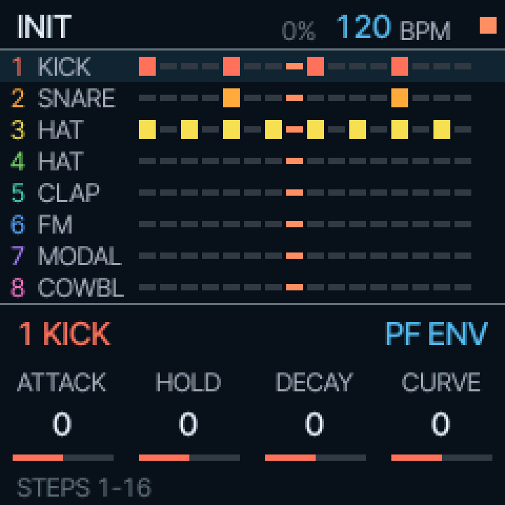
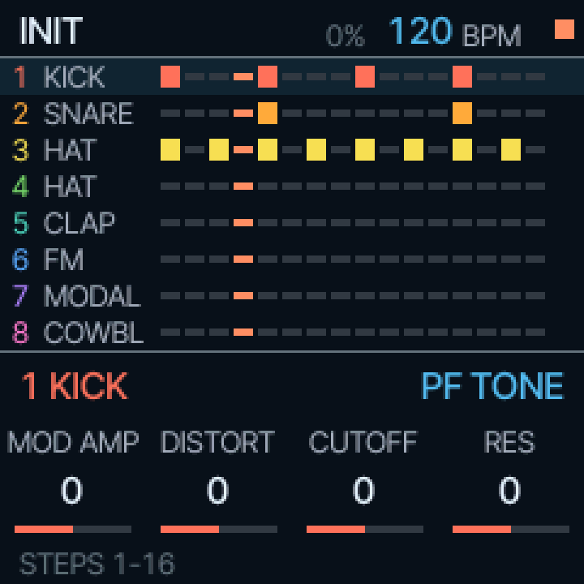
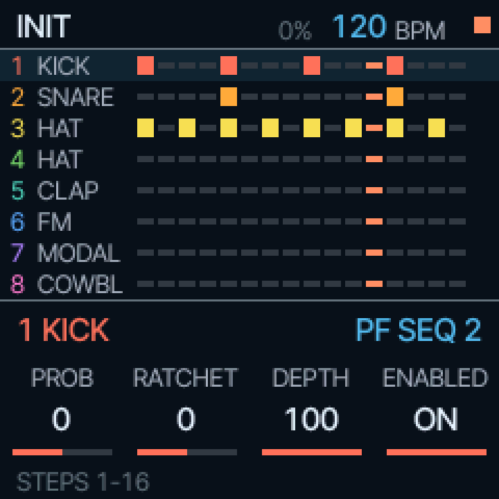
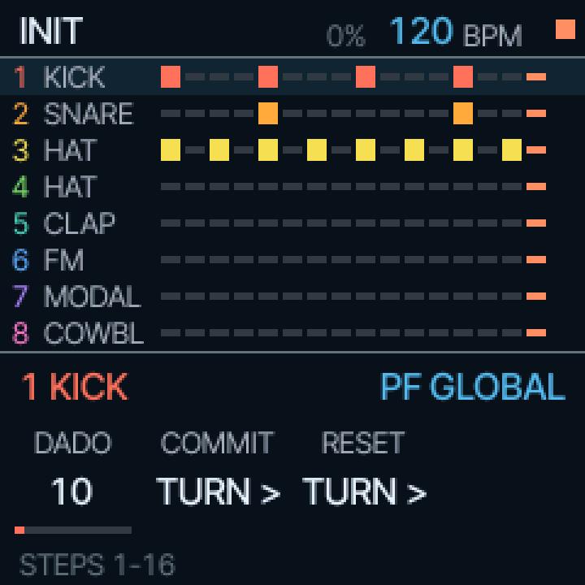
| ATTACK…CURVE | Agiscono su entrambi gli inviluppi di ogni voce. |
| SYNTH 1–4 | Le quattro manopole del motore di ogni voce, qualunque motore sia. |
| MOD AMP | Scala tutte le profondità di modulazione delle voci, da 0 a due volte. |
| STEPS…RATCHET | Agiscono sul sequencer: i ritmi di tutte le voci si infittiscono o si diradano insieme. |
| DEPTH | Scala l'intera Performance; negativo la inverte. −100 … +100 |
| ENABLED | Accende o spegne tutta la Performance, per confrontare prima e dopo. OFF · ON |
| DADO | Ampiezza del DADO della Performance (il tasto nero DADO su una pagina ARP). 0 … 100 |
| COMMIT | Scrive il suono attuale nei controlli delle voci e riporta la Performance a zero. PERFORMANCE COMMITTED |
| RESET | Riporta a zero tutti i controlli PF senza toccare le voci. PERFORMANCE RESET |
Su una pagina ARP premi il tasto nero DADO finché trovi una variazione interessante, dosala con DEPTH, poi COMMIT per renderla definitiva. I controlli che non vuoi far toccare al DADO si escludono con SAVE tenuto + manopola; i lucchetti delle voci li escludono anche dalla Performance.
GLO contiene tutto quello che è unico nel kit: il tempo e il clock, i due effetti in mandata e il bus master. Nove pagine, nell'ordine in cui scorre il segnale.
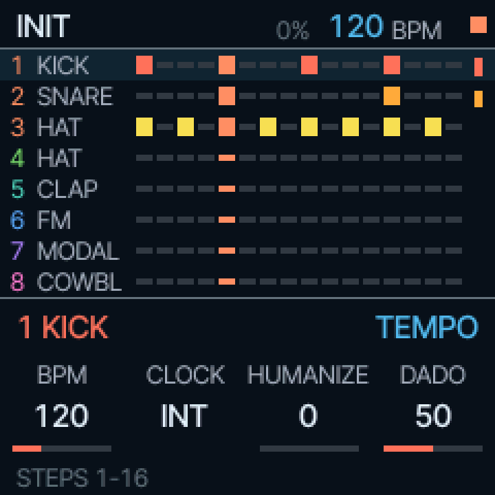
| BPM | Il tempo del kit (come la manopola SELECT). 40 … 300 |
| CLOCK | INT: il tempo è BPM. EXT: segue il clock MIDI (capitolo 16). La scelta resta anche dopo lo spegnimento. INT · EXT |
| HUMANIZE | Spostamenti casuali dei colpi, comuni a tutte le voci (lo stesso di SEQ › MORE). 0 … 100 |
| DADO | Ampiezza di tutte le randomizzazioni del kit: DADO di voce, di lane, di tutte le voci. 0 … 100 |
Un delay che cambia tempo all'istante, senza glissati di intonazione. Gira a metà frequenza di campionamento per stare nella memoria dell'FM-1: le ripetizioni sono un po' più scure di quelle del plugin.
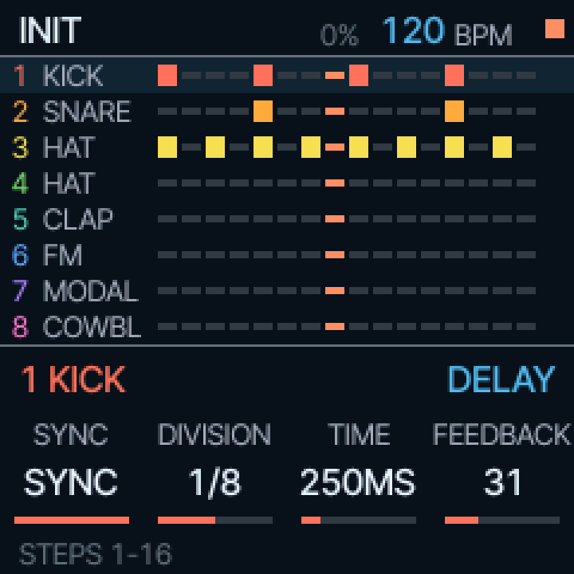
| DELAY | |
| SYNC | FREE: tempo in ms. SYNC: una divisione musicale. FREE · SYNC |
| DIVISION | La divisione in SYNC. 8 BAR … 1/64 |
| TIME | Il tempo in FREE. 1 … 1480 ms |
| FEEDBACK | Quante ripetizioni. 0 … 100 |
| DELAY 2 | |
| GLITCH | Variazioni casuali del tempo, da vibrato leggero a ritmi spezzati. 0 … 100 |
| FB TILT | Scurisce o schiarisce le ripetizioni. ±100 |
| DUCKING | Abbassa il delay mentre le voci suonano. 0 … 100 |
| S.RATE | Rallenta l'elaborazione: suono lo-fi, tempi più lunghi. 0 … 100 |
| DELAY 3 | |
| STEREO | Glitch indipendente per canale. OFF · ON |
| PONG | Ripetizioni alternate sinistra/destra. OFF · ON |
| > REVERB | Quanto delay va nel riverbero. 0 … 100 |
| GAIN | Volume del delay. −24 … +12 dB |
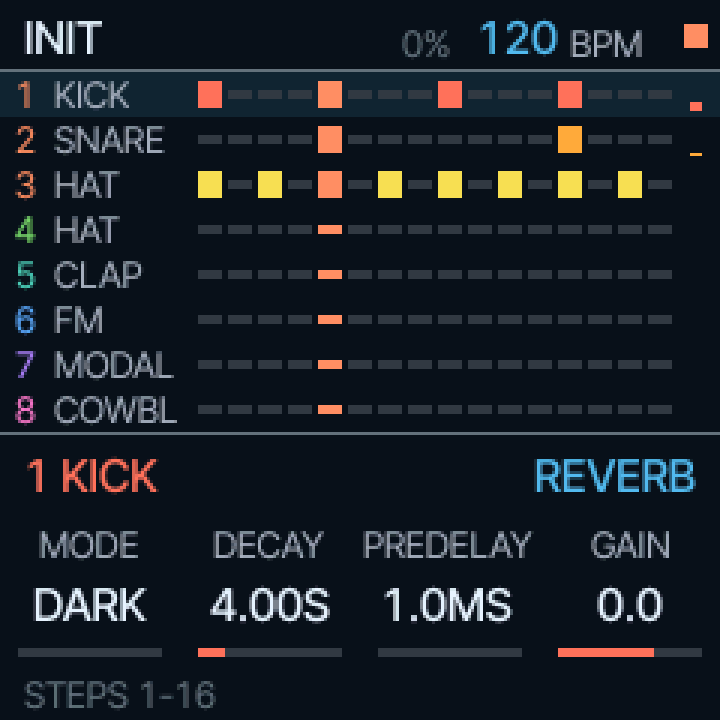
| REVERB | |
| MODE | DARK, BRIGHT, HALL o TIN CAN (stanza minuscola e metallica). |
| DECAY | Durata della coda. 0,1 … 20 s |
| PREDELAY | Ritardo prima della coda. 0,1 … 499 ms |
| GAIN | Volume del riverbero. −24 … +12 dB |
| REVERB 2 | |
| PRE SYNC | PREDELAY in ms (FREE) o in divisioni (SYNC). |
| PRE DIV | La divisione del predelay in SYNC. |
| S.RATE | Grana più grossa e spazio più grande. 0 … 100 |
| IN TILT | Equalizzazione prima del riverbero. ±100 |
| REVERB 3 | |
| OUT TILT | Equalizzazione dopo il riverbero. ±100 |
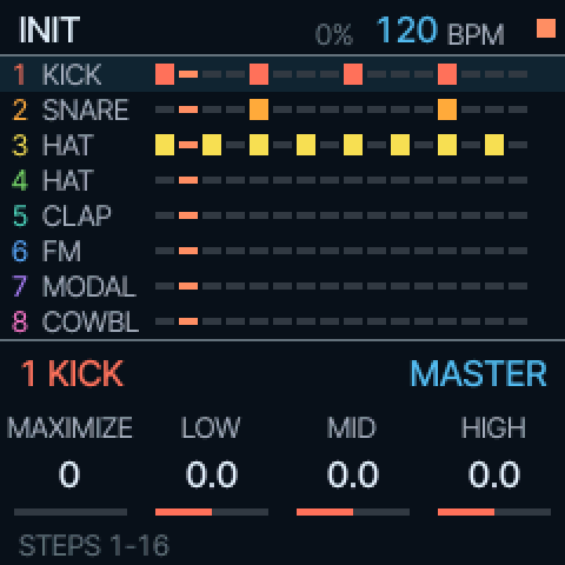
| MASTER | |
| MAXIMIZE | Compressore aggressivo: alza le parti deboli e le code. 0 … 100 |
| LOW · MID · HIGH | Equalizzatore a tre bande. ±18 dB |
| MASTER 2 | |
| GAIN | Volume finale del kit, prima della manopola MASTER. −36 … +12 dB |
| CLIP | Cosa succede ai picchi: NONE, SOFT (saturazione morbida), HARD (taglio netto), FOLD (ripiegamento). |
GAIN e CLIP fanno parte del suono del kit e si salvano con lui; la manopola MASTER del pannello no.
La memoria dell'FM-1 tiene 16 kit e 16 preset di voce. Ogni salvataggio scrive una copia nuova e conserva la precedente finché la nuova non è completa: se togli la corrente a metà, resta il kit di prima.
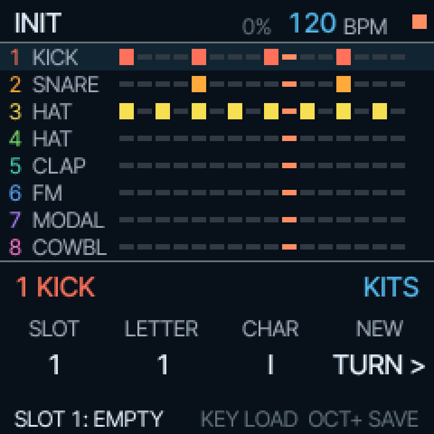
| SLOT | Lo slot in cui salvare. 1 … 16 |
| LETTER | La posizione nel nome da modificare. 1 … 11 |
| CHAR | Il carattere in quella posizione. spazio · A–Z · 0–9 · - · # |
| NEW | Nuovo kit: a destra una volta INIT, due volte il kit di riferimento DAEL; conferma con OCT+. A sinistra annulla. |
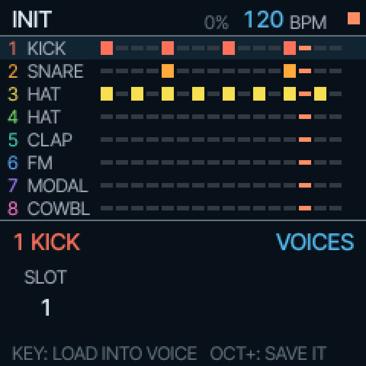
| SLOT | Il preset in cui salvare. 1 … 16 |
Un preset contiene il suono di una voce: motore, manopole, tone, inviluppi, LFO e modulazioni. Non contiene la sequenza, il mixer e il routing, quindi puoi cambiare suono senza perdere il ritmo.
Quando il kit è cambiato, la macchina è ferma e non tocchi niente per 4 secondi, il kit va in un'area di salvataggio automatico; all'accensione Drummatic riparte da lì. Anche caricare un kit lo rende il punto di partenza della prossima accensione. L'autosave si spegne nel menu di sistema (AUTOSV).
Ogni scrittura nella memoria (salvataggio, autosave, impostazioni) interrompe l'audio per qualche decina di millisecondi. Per questo l'autosave aspetta che la macchina sia ferma: salva i kit a sequencer fermo.
SAVE › KITS › NEW girato a destra due volte, poi OCT+: DAEL REFERENCE KIT. È l'intro di "Dael" ricostruita: 90 BPM, −20 cent, una battuta. Colpo e buzz sull'1, buzz che cresce sul 4, rumore sul 5, zap sul 6, pila metallica sull'8, hat sul 9 e sul 13; la voce 8 è la cassa del riferimento cassa/basso, fuori dal pattern. I livelli delle voci sono entro 0,6 dB RMS dal riferimento, il mix a −20,4 dBFS RMS. È un buon punto di partenza da cui costruire.
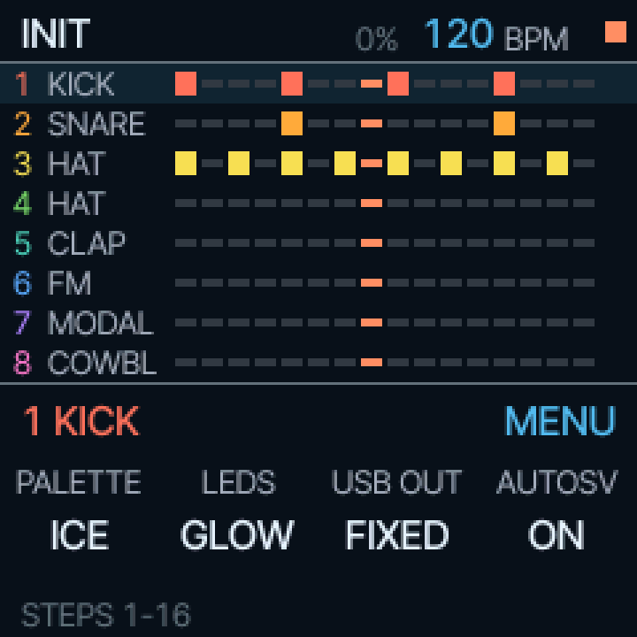
Impostazioni dello strumento, non del kit: restano uguali qualunque kit carichi. Si esce con HOME o con un bottone di pagina; le impostazioni vengono salvate in quel momento.
| PALETTE | I colori dello schermo. GREY · GREEN · AMBER · ICE · VIOLET · ROSE · PAPER · HI-CON · NIGHT · MONO |
| LEDS | GLOW: i LED "disponibili" sono tenui. DARK: si accendono solo i LED attivi. GLOW · DARK |
| USB OUT | FIXED: l'audio USB esce a livello pieno, indipendente dalla manopola MASTER (ideale per registrare). MASTER: la manopola regola anche l'USB. FIXED · MASTER |
| AUTOSV | Autosave del kit. ON · OFF |
Il tasto nero DADO inventa valori nuovi. Cosa cambia dipende dalla pagina in cui sei:
| Pagina | Cosa randomizza | Messaggio |
|---|---|---|
| EDIT FX ENV LFO SCL HOME | Il suono della voce scelta. | DADO: VOICE |
| SEQ | La lane scelta in SEQ › LANE, sulla voce scelta. | DADO: LANE |
| ARP | I controlli della Performance non esclusi. | DADO: PERFORMANCE |
| GLO | Il suono di tutte le otto voci. | DADO: ALL VOICES |
| DADO tenuto + V1…V8 | Il suono di ogni voce toccata, da qualunque pagina. | DADO: VOICE |
Prima di lanciare il dado su un suono che ti piace, salvalo come preset di voce o copialo con EDIT › VOICE › COPY: se il risultato non ti convince, PASTE lo riporta indietro.
Drummatic riceve il MIDI dalla porta USB e dall'ingresso TRS insieme. I canali seguono la stessa specifica del plugin: un sequencer o un controller che comanda Drummatic nel DAW comanda allo stesso modo l'FM-1.
| Canale | Note → azione |
|---|---|
| 1 | Do, Do#, Re, Re#, Mi, Fa, Fa#, Sol (qualsiasi ottava) suonano le voci 1–8. La velocity è la dinamica. |
| 2–9 | La voce 1–8 suonata in modo cromatico: il Do3 (nota 60) è la sua intonazione di base. |
| Note | Azione |
|---|---|
| 0 · 1 · 2 | Play/stop alternato · play · stop. |
| 12–19 | Mute on/off delle voci 1–8. |
| 24–31 | Solo on/off delle voci 1–8. |
| 36–43 | Mute momentaneo (finché la nota è tenuta). |
| 48–55 | Solo momentaneo. |
| 60–67 | Choke immediato della voce. |
| Note | Azione |
|---|---|
| 0 · 1 | Kit precedente · successivo (fra gli slot usati). |
| 2 | Un kit a caso. |
| 3 | Randomizza tutte le voci. |
| 12 · 13 · 14 | Performance: DADO · RESET · COMMIT. |
| 24–31 | Randomizza la voce 1–8. |
In GLO › TEMPO › CLOCK › EXT Drummatic segue START, STOP e il clock MIDI (24 impulsi per quarto) e ricava il tempo dagli impulsi, con piccole correzioni continue per restare agganciato. In alto lo schermo scrive EXT al posto di BPM e SELECT non cambia il tempo.
Il firmware è un file drummatic-fm1-versione.fwsc. Si installa via USB in uno di questi modi:
python3 fm1_install.py drummatic-fm1-0.1.fwsc, dopo pip3 install mido python-rtmidi.L'FM-1 ha un processore piccolo. La percentuale in alto sullo schermo è il carico misurato: il kit di accensione ne usa una parte modesta, ma otto voci pesanti in stereo con filtri a pettine, glitch, delay e riverbero insieme possono superarlo. Sopra l'85 % per due blocchi audio di fila, il firmware chiude la voce più bassa con una dissolvenza di 3 ms per non gracchiare.
| Più pesanti | Consiglio |
|---|---|
| ADDITIVE · SCRAPYRD · MODAL · RESON | I motori più cari: usali su poche voci, o con meno PARTIALS (ADDITIVE). |
| STEREO | Raddoppia il costo del motore: tienilo sulle voci che ne beneficiano davvero. |
| MINIGLCH · MEGAGLCH · COMB | Le parti di TONE più pesanti. |
| Delay e riverbero | Si spengono da soli quando non ricevono nulla: costano solo se le mandate sono aperte. |
| Sintomo | Causa probabile e soluzione |
|---|---|
| Premo PLAY e non parte | CLOCK è su EXT: aspetta lo START MIDI. Riportalo su INT in GLO › TEMPO. |
| SELECT non cambia il tempo | Stesso motivo: con il clock esterno il tempo arriva da fuori. |
| Una voce non si sente | È mutata (grigia) o un'altra è in solo (LED SOLO acceso); oppure GAIN è basso, o un'altra voce la zittisce con CHOKE. |
| Tocco un tasto bianco e non succede nulla | Il passo è oltre la lunghezza della sequenza (tasto spento): allunga LENGTH in SEQ › TIME. Oppure i tasti sono in PADS: premi REC fino a STEPS. |
| Il DADO non cambia un controllo | Il controllo ha il lucchetto (etichetta rossa): toglilo con SAVE tenuto + manopola. |
| Le voci si spengono da sole | La CPU è sopra l'85 %: alleggerisci il kit (vedi sopra). |
| KIT TOO BIG | Il kit non sta in uno slot: svuota le lane che non usi con SEQ › TOOLS › CLR LANE. |
| Piccoli buchi nell'audio a macchina ferma | È l'autosave che scrive nella flash. Normale; si spegne nel menu (AUTOSV). |
| L'audio USB è troppo basso o troppo alto | Menu › USB OUT: FIXED è il livello pieno, MASTER segue la manopola. |
| L'FM-1 non si accende più normalmente | Tieni OCT− e OCT+ per 5 secondi per UBOOT, poi reinstalla il firmware. |
| Pagina | K1 | K2 | K3 | K4 |
|---|---|---|---|---|
| EDIT SYNTH | le 4 manopole del motore | |||
| EDIT ENGINE | ENGINE | PITCH | STEREO | AMP ENV |
| EDIT VOICE | COPY | PASTE | RESET | PRESETS |
| FX TONE | FILTER | CUTOFF | RESO | DISTORT |
| FX TONE 2 | DIST | ORDER | ||
| ENV 1 · 2 | ATTACK | HOLD | DECAY | CURVE |
| ENV VELOCITY | ENV1 VEL | ENV2 VEL | ||
| LFO 1 · 2 | SPEED | AMP | SHAPE | WAVE |
| LFO 1+ · 2+ | SYNC | BIPOLAR | RESET | |
| SCL MOD | SOURCE | TARGET | DEPTH | ROUTES |
| SCL MACRO | MACRO 1 | MACRO 2 | VARIAT | |
| SCL LOCKS | TARGET | LOCK | ||
| SEQ EUCLID | STEPS | FILL | PATTERN | ROTATE |
| SEQ TIME | SPEED | MULT | LENGTH | SNAP |
| SEQ GROOVE | SHIFT | SWING | SHAPE | DENSITY |
| SEQ MORE | INVERT | RESET | RES LEN | HUMANIZE |
| SEQ LANE | LANE | MODE | LENGTH | ROTATE |
| SEQ TOOLS | ROT TRIG | CLR LANE | CLR TRIG | |
| HOME MIX | GAIN | PAN | DELAY | REVERB |
| HOME ROUTING | CHOKE | TRIGGER | PERF | FLIP |
| Pagina | K1 | K2 | K3 | K4 |
|---|---|---|---|---|
| PF ENV | ATTACK | HOLD | DECAY | CURVE |
| PF SYNTH | PITCH | SYNTH 1 | SYNTH 2 | SYNTH 3 |
| PF MOD | SYNTH 4 | MACRO 1 | MACRO 2 | VARIAT |
| PF TONE | MOD AMP | DISTORT | CUTOFF | RES |
| PF SEQ | STEPS | FILL | PATTERN | DENSITY |
| PF SEQ 2 | PROB | RATCHET | DEPTH | ENABLED |
| PF GLOBAL | DADO | COMMIT | RESET | |
| GLO TEMPO | BPM | CLOCK | HUMANIZE | DADO |
| GLO DELAY | SYNC | DIVISION | TIME | FEEDBACK |
| GLO DELAY 2 | GLITCH | FB TILT | DUCKING | S.RATE |
| GLO DELAY 3 | STEREO | PONG | > REVERB | GAIN |
| GLO REVERB | MODE | DECAY | PREDELAY | GAIN |
| GLO REVERB 2 | PRE SYNC | PRE DIV | S.RATE | IN TILT |
| GLO REVERB 3 | OUT TILT | |||
| GLO MASTER | MAXIMIZE | LOW | MID | HIGH |
| GLO MASTER 2 | GAIN | CLIP | ||
| SAVE KITS | SLOT | LETTER | CHAR | NEW |
| SAVE VOICES | SLOT | |||
| MENU | PALETTE | LEDS | USB OUT | AUTOSV |
| SCL tenuto + manopola | MAP: profondità della sorgente di SCL › MOD su quel controllo. | SAVE tenuto + manopola | Lucchetto (ARP: fuori dal DADO). |
| HOME tenuto | Menu di sistema. | OCT− + OCT+ 5 s | UBOOT. |
| Bianchi tenuti + manopole | Lane dei passi; PRESETS: gruppo di lane. | MUTE / SOLO / DADO + V1–V8 | Su ogni voce toccata. |
| REC | STEPS › PADS › REC. | OCT+ | Conferma (salva, RESET, NEW). |